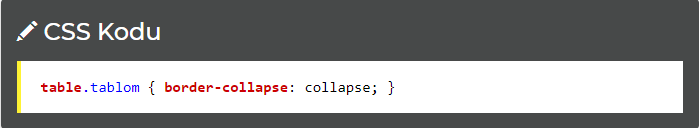
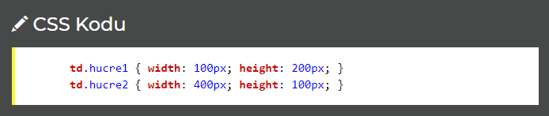

CSS Tablolar
| Dil |
Neden Lazım |
| HTML |
Temel web sayfası yapım bilgisi |
| CSS |
Siteyi görselleştirme |
| PHP,ASP |
İşlevsel siteler yapmak |
| MySQL |
Verileri yönetmek |
Tablolarla ilgili bilmeniz gereken komutlar:
border
border-collapse
width ve height
NOT: Tablolarda nesneler hücrelerde yer alır. HTML'de hücreler TD elementi ile belirtilir. Dolayısıyla aşağıda anlatılan kodların çoğu TD elementine yöneliktir.
border-collapse: Kenarlıkları Kaldır
Tablo özelliği olarak bunu belirtirsek tablonun varsayılan kenarlıkları görülmeyecektir.

width/height: Tablo Genişliği ve Yüksekliği
Tablo ve tablo hücreleri için genişlik (width) ve yükseklik (height) belirtmemizi sağlar.

Yukarıdaki örnekte hucre1 adlı hücre 100 piksel genişlik ve 200 piksel yüksekliğe sahipken, hucre2 400 piksel genişlik ve 100 piksel yüksekliğe sahiptir.
Diğer Tablo Şekillendirme Komutları
text-align: Tablo içindeki yazıların hizasını belirlersiniz.
padding: Tablo içinden belirtilen değerde boşluk verdirir.
background-color: Arkaplan rengini belirtir.
color: Yazı rengini belirtir.